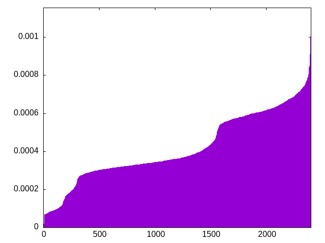
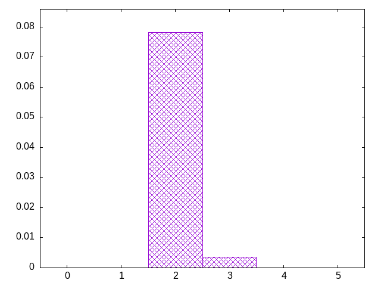

pieces are drawn from a bag (the window) which is refilled by a second bag
window=7, fixed second bag
osijlzojisjztotsiziljlosztlizsttiljosotjzilsilljzjjosltitoozjtlztjsosoliizzittlosizjltjijszostjsitzjoliozostljisojlstzzlijotsstzljolsojizittoilsizzozjtlsosjlitiojzsltzlilotjlsstziztjlosjzoisztjosoijilltozszjtlsijoitlsjoizjztzliltjoljztltoisjlosotzijisitslizjtoszljlzsjsoztosoilittlsjztioosizjloijillttzzsioztojslzljztssiiojsjiotzjjtotlozzilslsiztjtllsoiljtosisiljtzozstizzjoljosiltltiojosiztozsijzlojsztlsjzltjsisijolzjlziisojlsotzijtzsjiotozoltjttoszlstljziltisjiozltisosotjjlsljzlsiziozlotoistjotjsilzlizojsjtsjizislojtlziooszlijstotztjltoizsilljizzooszsljtotjislttjolljisojzsislzzztiltoojtsiizsjzoliltittzojljsotzsloisjzjotzllsiitjzoojztsljsisitiljlzitslstjjotlzzioltioszjoostiljojzszzitjliltootzojszitisolzjlijlsjossliziztjtlsosjszotillozsjiijzttztjstoooilsljtziilztslzsjslojtozlojzjiistosiitlolztosjojjlztloszitilotsijzstsjzzlloijilitjtoisltoszzjtjoizsjoszzoijtlszlsljtlitjoizlztssisitollizoojjlsjisoiotztsjlijtzoziljlttzzlistoooisjzsjjzllsijttolstzzlisszjojtsiziloitosjotztszljoltoolijisjszjotl
bagginess: 0.0278
bagginess6: 0.3474
distribution1_maxgap: 2.000000000002e-06
distribution2_maxgap: 0.008547008547008548
distribution3_maxgap: 0.00111000222000444
distribution4_maxgap: 4.2000126000377996e-05
diversity: 5.2
entropy: 11.374
evenness_diff: 7.640
evenness_same: 4.616
maxdrought: 30.4
maxflood: 5
peakdrought: 5.6
repchance: 0.0853
seq4_coverage: 1.0000
seq4_follow: 6.944
distribution4_graph:

flood_graph:

similarity: (lower is more similar)
| 0.099 | wet2 |
| 0.110 | wet3_size12 |
| 0.117 | deepbag_window4 |
| 0.131 | shirts_g3w7 |
| 0.132 | deepbag_fixed4 |
| 0.156 | seamless_deep_pure |
| 0.162 | weight_lin_pure |
| 0.164 | bag2 |
| 0.171 | shift7 |
| 0.175 | balanced5 |
| 0.184 | weight2 |
| 0.190 | shirts_smooth_c10 |
| 0.203 | shirts_smooth_c12 |
| 0.241 | deepbag_fixed10 |
| 0.242 | seamless_bag2_pure |
| 0.244 | balanced7 |
| 0.270 | seamless_bag3_pure |
| 0.271 | weight |
| 0.299 | balanced_long_add_pure |
| 0.301 | shirts_g1w3 |
| 0.308 | shirts_smooth_c14 |
| 0.312 | shift10_5 |
| 0.315 | deepbag_window10 |
| 0.325 | deepbag_window7 |
| 0.325 | bag |
| 0.331 | bag3 |
| 0.346 | balanced9 |
| 0.347 | bag_pure |
| 0.349 | shift14 |
| 0.352 | shift3_5 |
| 0.358 | shift21 |
| 0.358 | nes_pure |
| 0.364 | tgm_pure |
| 0.365 | wet3 |
| 0.374 | nes |
| 0.377 | bag4 |
| 0.377 | tgm |
| 0.377 | shirts_g1w7 |
| 0.383 | balanced_long_mul_pure |
| 0.444 | wet |
| 0.455 | wet_pure |
| 0.506 | shirts_smooth_c8 |
| 0.509 | wet2_size100 |
| 0.513 | fullrandom |
| 0.533 | weight_exp |
| 0.548 | tgm_tap |
| 0.564 | tgm_tap_pure |
| 0.619 | fullrandom_pure |
| 0.629 | weight_exp_pure |
| 0.662 | ti |
| 0.692 | seamless_bag_pure |
| 1.106 | shirts |
| 1.360 | shirts_smooth |
| 1.776 | shift1_75 |
| 2.604 | repeat_recent_pure |
| 4.657 | repeat_last_pure |
| 7.662 | flatbag |
| 7.662 | flatbag_pure |